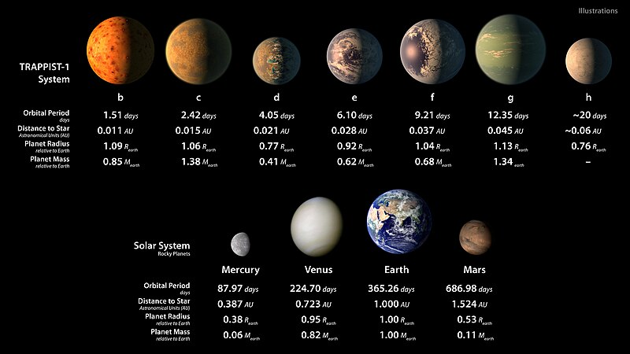

Welcome to Astronomic data
Gracias Wikipedia

Imagen Extraida de www.Wikipedia.com.ar
TRAPPIST-1 System
| Planet Name |
Orbital Period(days) |
Distance to star (Astronomical Unit) |
Planet Radius (Relative to Earth) |
Planet Mass (Relative to Earth) |
| B |
1.51 days |
0.011 AU |
1.09 R.earth |
0.85 M.earth |
| C |
2.42 days |
0.015 AU |
1.06 R.earth |
1.38 M.earth |
| D |
4.05 days |
0.021 AU |
0.77 R.earth |
0.41 M.earth |
| E |
6.10 days |
0.028 AU |
0.92 R.earth |
0.62 M.earth |
| F |
9.21 days |
0.037 AU |
1.04 R.earth |
0.68 M.earth |
| G |
12.35 days |
0.045 AU |
1.13 R.earth |
1.34 M.earth |
| G |
20 days |
0.06 AU |
0.76 R.earth |
- |
Solar System
| Planet Name |
Orbital Period(days) |
Distance to star (Astronomical Unit) |
Planet Radius (Relative to Earth) |
Planet Mass (Relative to Earth) |
| Mercury |
87.97 days |
0.387 AU |
0.38 R.earth |
0.06 M.earth |
| Venus |
224.70 days |
0.723 AU |
0.95 R.earth |
0.82 M.earth |
| Earth |
365.26 days |
1.0000 AU |
1.00 R.earth |
1.00 M.earth |
| Mars |
686.98 days |
1.524 AU |
0.53 R.earth |
0.11 M.earth |